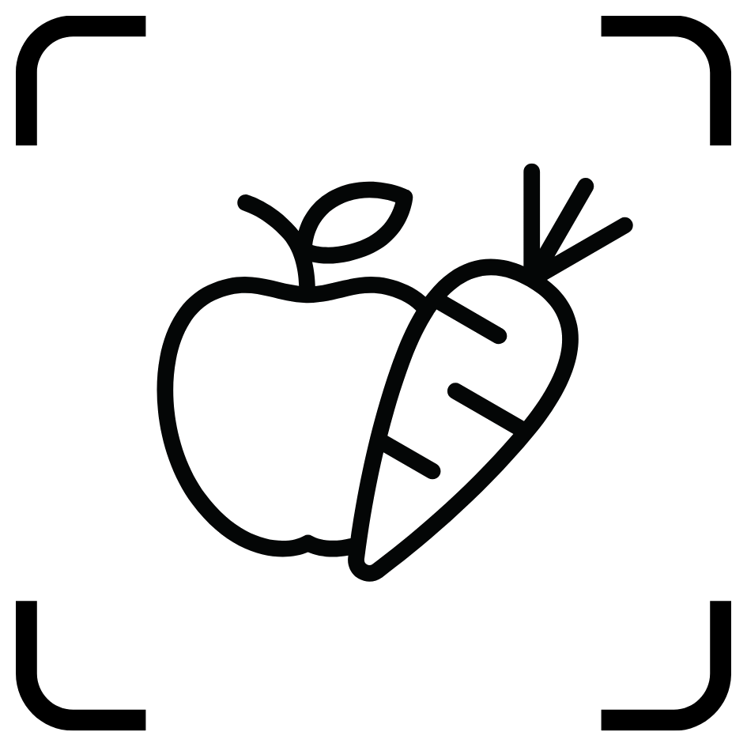
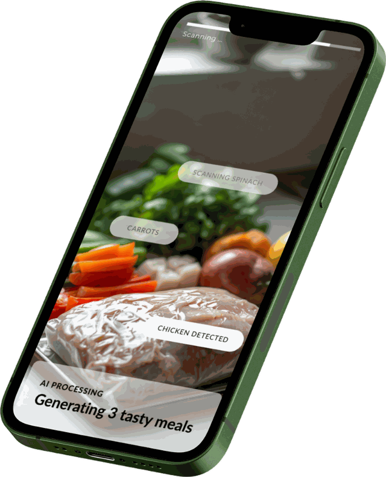

ALL WORK / SNAP2MEAL /

The opportunity I found, how I decided where AI actually earns its place, what the unit economics forced me to cut, and how it got built and launched solo. Roughly two minutes a chapter.
